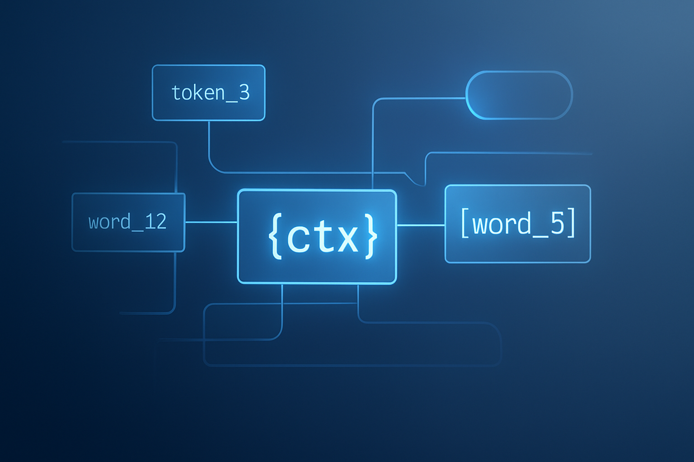
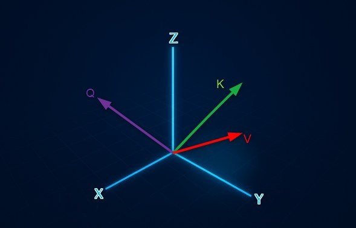

Descifrando el Cerebro de GPT-2: El Modelo de Atención

El Modelo de Atención es la herramienta clave que permite a las inteligencias artificiales (IA), como GPT-2, entender el lenguaje humano con un contexto profundo. Este proceso, que ocurre constantemente durante el entrenamiento de la red neuronal, funciona como un equipo de detectives que resuelven un misterio frase por frase.
Utilizaremos la frase de ejemplo para entender el proceso: "La mujer sirvió el pastel, y ella sonrió."
El misterio a resolver es: ¿A quién se refiere el pronombre "ella"?
1. La Transformación Inicial: De Palabra a Flecha
En el cerebro de la IA, cada palabra comienza siendo un vector, una flecha en un espacio matemático de muchas dimensiones. Para facilitar la comprensión, usaremos el término flecha.
Esta flecha inicial solo conoce la similitud general de la palabra, lo que conocimos antes como embeddings. Para el proceso de atención, esta flecha (vector) se transforma en tres flechas especializadas, es decir ahora se represeenta con tres flechas de tres valores diferentes:
El Rol del Entrenamiento
El Modelo de Atención es la arquitectura de la red. Al inicio del entrenamiento, los números dentro de las matrices de peso (que llamaremos tarjetas de identificación o etiquetas de clasificación) son aleatorios, por lo que las flechas apuntan a lugares sin sentido. El entrenamiento se encarga de ajustar esos números para que las flechas apunten a direcciones coherentes. Si la IA se equivoca, utiliza el mecanismo de Backpropagation (el cual explicaremos en un futuro artículo) para corregir la dirección de estas flechas.
Las Tres Flechas Especializadas

Cada palabra genera tres flechas que tienen roles fijos:
La Pregunta (Q - Query):
Esta flecha sale de la palabra que estamos analizando (ej., "ella") y apunta en la dirección de la información que necesita. Su propósito es preguntar: "¿Cuál palabra requiere más atención?"
La Etiqueta (K - Key):
Esta flecha sale de todas las demás palabras (ej., "mujer"). Es el rótulo de identificación que indica su identidad (ej., "Soy un sujeto femenino").
El Contenido (V - Value):
Esta flecha contiene el Conjunto de Clasificación de la Palabra. Incluye todas las propiedades conocidas de la palabra (sinónimos, categorías), pero aún no sabe cómo esa palabra está siendo usada en esta frase específica.
2. La Amistad Vectorial: Alineación y Producto Punto
El paso crucial es medir la "amistad" entre la flecha Q (Pregunta) y la flecha K (Etiqueta) de las demás palabras.
La Geometría de los Vectores
Las flechas Q y K son los vectores completos que salen del origen. En un plano tridimensional, un vector se define por sus coordenadas (x, y, z).
Alineación: El Significado de la Amistad
Cuando decimos que las flechas están alineadas, nos referimos a que apuntan en la misma dirección general en el espacio. Esta alineación es conceptual: significa que la idea de la pregunta coincide con la idea de la etiqueta.
El Producto Punto: Medir la Alineación
El Producto Punto es la fórmula matemática que usamos para obtener un único número que nos dice qué tan alineadas están estas dos flechas:
- Si el Producto Punto es Alto y Positivo, se produce la Máxima Alineación.
- Si el Producto Punto es Cero, se produce la Irrelevancia (son perpendiculares).
- Si el Producto Punto es Negativo, se produce la Oposición.
Video Sugerido (Producto Punto)
Para entender visualmente por qué esta operación matemática mide la alineación:
3. El Enfoque y la Construcción del Contexto
Softmax: Repartiendo el 100%
La IA toma los números de amistad y los convierte en porcentajes usando la función Softmax. Esto es esencial porque obliga a la IA a repartir el 100% de su atención. El resultado es que "mujer" obtiene el 85% de atención, "pastel" obtiene el 5%, y así sucesivamente.
Video Sugerido (Softmax):
La Suma Ponderada: La Nueva Flecha Final
El modelo toma el Conjunto de Clasificación (V) de cada palabra y lo multiplica por su porcentaje de atención (Softmax). Suma todos esos resultados en una única flecha. Esta Suma Ponderada crea el Vector Final que es el nuevo significado contextualizado de la palabra.
Significado Contextualizado: El Vector Final de "ella" es una nueva flecha que apunta a una nueva ubicación en el espacio. Esta nueva ubicación es la clave para la comprensión de la IA. No es que contenga la palabra de más atención, sino que la posición misma de la flecha ahora representa la idea compuesta: "Soy 'ella', pero con un 85% de las propiedades de la 'mujer', lo que significa que fui yo quien sonrió."
El Rol de la Supervisión Humana (RLHF)
Aunque el mecanismo de atención se entrena inicialmente, el rendimiento de la IA se afina con el Refuerzo por Feedback Humano (RLHF). Esto significa que la IA recibe calificaciones de humanos sobre la calidad de sus respuestas y usa ese feedback para ajustar sus parámetros, garantizando que sus respuestas sean más útiles, seguras y alineadas con la intención humana.